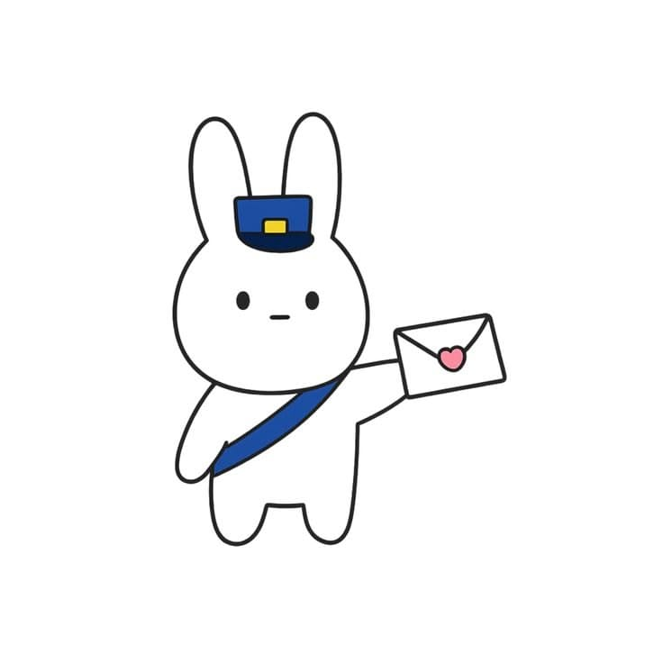
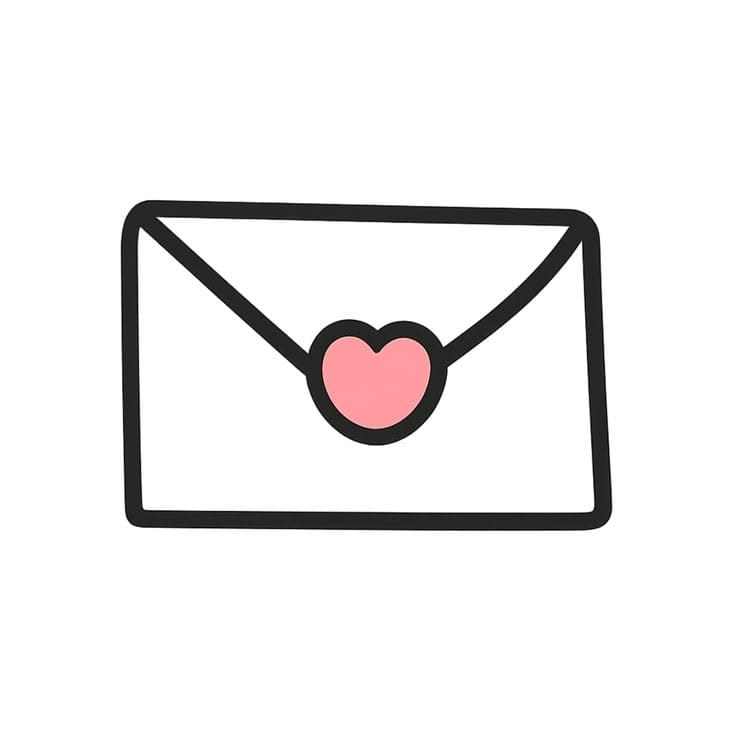
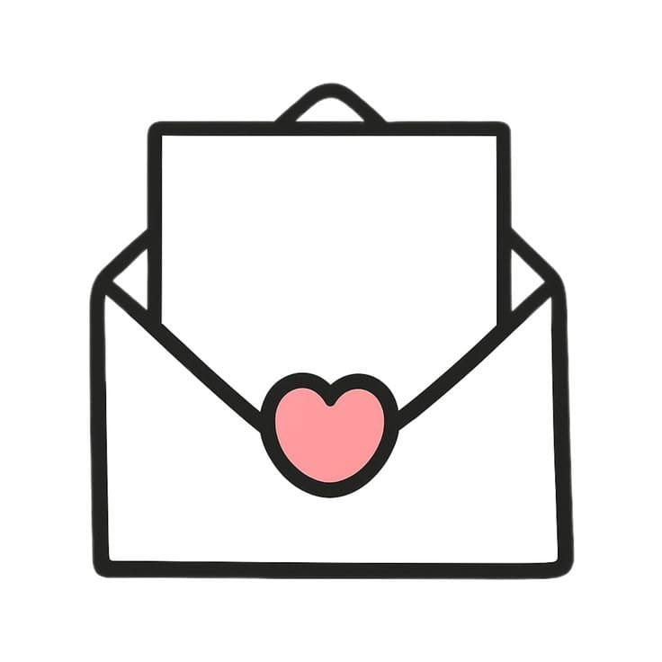
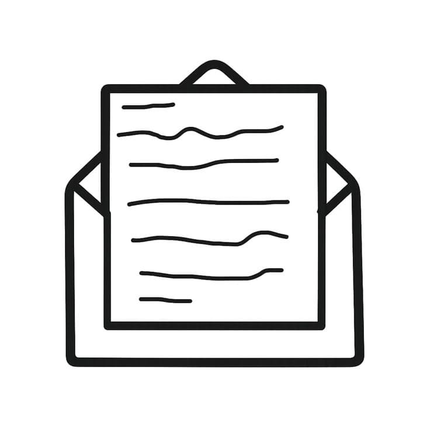

AMO ESTAR ENAMORADA DE TI
Sí, asi de fuerte empezamos,es que no hay sentimiento mas hermoso que el que tu haces en mi, eres semejante a la primera vez en la que un niño prueba el dulce o cuando un adolescente mira el atardecer con su musica favorita de fondo, amo todo de ti a excepción de la cruda distancia que nos separa, pero aun asi me gusta porque me hace ver que no necesito cosas fisicas para enamorarme de ti y es muy hermoso poder sentir tu amor a kilometros de distancia, es maravilloso.
He de decir que me gustas desde el primer día, fue como «Oh, rayos esta chica me encanta, quiero intentarlo con ella» un poco cliché, pero fue así y me encanta, es decir, me encantas, me encanta todo esto.
Aún faltan muchas cosas por experimentar a tu lado, y estoy ansiosa por saber cuáles serán, obviamente la ruptura no entra en esta ocasión, realmente me la pasó muy bien contigo, disfruto tener conversaciones triviales o muy significativas, ya sea entre el día o muy tarde por la noche (no es saludable) de cualquier modo, esa siempre será mi parte favorita del día, compartir momentos contigo.
Estamos muy cerca de cumplir dos meses y quizás para los demás sea algo insignificante, en plan «Es muy poco tiempo, no es para tanto» pero para mí es completamente significante, en plan «Quiro estar toda mi vida contigo porque vales toda la pena» obviamente los demás no lo entenderían, pero me es suficiente con que tú lo entiendas.
No voy a negar que he imaginado muchos, muchísimos escenarios ficticios contigo, y no necesariamente en ese aspecto, es más como algo sencillo sabes, salir a caminar tomadas de la mano, mirar el atardecer juntas desde alguna cúspide de la ciudad en la que estemos, un día de pic-nic, muchos besos bajo la lluvia o ser nosotras en un día de invierno, porque contigo cualquier cosa o actividad lo hace ver maravilloso y deseo que algún día podamos cumplir al menos uno de esos escenarios.
te amo